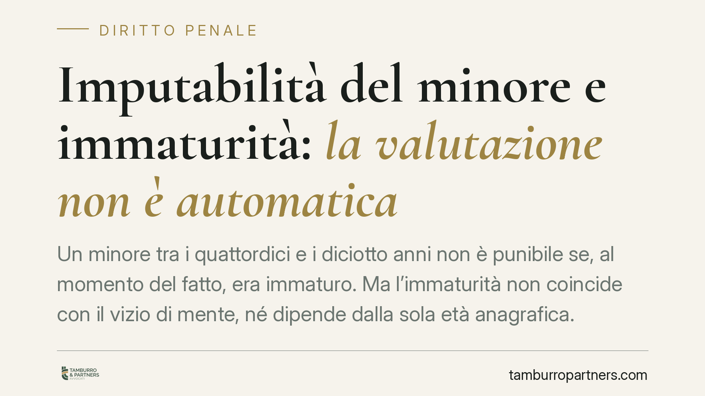

Imputabilità del minore e immaturità: la valutazione non è automatica
Un minore tra i quattordici e i diciotto anni non è punibile se, al momento del fatto, era immaturo. Ma l'immaturità non coincide con il vizio di mente, né dipende dalla sola età anagrafica. La giurisprudenza di legittimità chiede al giudice minorile una valutazione rigorosa e concreta della personalità, piano per piano. Vediamo cosa significa e perché conta nella difesa.

Il punto giuridico in sintesi
Quando un adolescente commette un reato, la prima domanda del processo minorile non è "cosa ha fatto", ma "era in grado di comprenderlo e di determinarsi liberamente?". È la questione dell'imputabilità del minore, e la risposta non è mai scontata.
L'orientamento della giurisprudenza di legittimità è chiaro su un punto: il vizio parziale di mente non implica automaticamente la maturità del minore, e l'età anagrafica non è dirimente. Due profili che spesso vengono confusi, con conseguenze rilevanti sull'esito del giudizio.
*Nota di trasparenza: alcune pronunce citate nella fonte divulgativa riportano estremi che vanno verificati sul testo ufficiale prima di qualsiasi utilizzo processuale. In questa sede ci riferiamo all'orientamento consolidato della Corte di Cassazione, non a un singolo numero di sentenza.*
Inquadramento normativo
Il punto di partenza è l'art. 85 del codice penale: nessuno può essere punito se, al momento del fatto, non era imputabile, cioè capace di intendere e di volere. È la nozione generale che regge tutto il sistema.
Su questa base si innestano due disposizioni distinte.
L'art. 97 c.p. esclude in modo assoluto l'imputabilità per chi non ha ancora compiuto quattordici anni: una presunzione legale, senza accertamento.
L'art. 98 c.p. riguarda invece il minore tra i quattordici e i diciotto anni. Qui non c'è automatismo: è imputabile solo se, al momento del fatto, aveva capacità di intendere e di volere, da accertare caso per caso. È il terreno della cosiddetta immaturità.
Altro piano ancora è l'art. 89 c.p., sul vizio parziale di mente: riguarda chi, per infermità, aveva una capacità grandemente scemata ma non del tutto esclusa. Produce una riduzione di pena, non l'esclusione della punibilità.
Immaturità e vizio di mente non sono la stessa cosa
Qui sta il nodo spesso frainteso. Maturità e capacità di intendere e di volere non sono sinonimi, e l'immaturità dell'art. 98 non si deduce in modo meccanico dalla presenza di un vizio di mente.
Un minore può presentare un vizio parziale di mente ai sensi dell'art. 89 e, al tempo stesso, essere stato maturo rispetto al fatto specifico. Oppure può essere privo di patologie psichiche e, ciò nonostante, risultare immaturo per il grado di sviluppo della sua personalità.
Sono accertamenti autonomi, che rispondono a domande diverse: l'art. 89 guarda all'infermità; l'art. 98 guarda allo sviluppo complessivo del ragazzo e alla sua capacità di cogliere il disvalore della condotta.
La valutazione va ancorata al fatto concreto
Il secondo principio da trattenere: la maturità non si misura in astratto, ma rispetto al fatto commesso. Un adolescente può essere maturo per comprendere un reato semplice e immaturo di fronte a condotte più complesse.
Per questo il giudice minorile non può fermarsi all'età né a una perizia generica. Deve valutare lo sviluppo intellettivo, affettivo e volitivo del minore, il contesto familiare e sociale, e metterlo in relazione con la specifica vicenda. È una valutazione individualizzata, non una formula applicata in serie.
Implicazioni pratiche
Per la famiglia e per la difesa, questo significa che la partita non si gioca solo sulla ricostruzione del fatto, ma sulla personalità del minore e sul momento in cui il fatto è avvenuto.
Una perizia psicologica mal impostata — che confonde i due piani o resta generica — può pesare in senso sfavorevole. Al contrario, un accertamento accurato può fondare l'esclusione della punibilità per immaturità anche in presenza di un quadro clinico non patologico.
Cosa fare in concreto
- Richiedere tempestivamente l'accertamento sulla capacità di intendere e di volere al momento del fatto, senza attendere le fasi successive del giudizio.
- Pretendere una perizia individualizzata, che valuti maturità e personalità in relazione allo specifico reato contestato, non in astratto.
- Distinguere nei documenti tecnici i due profili: eventuale vizio di mente (art. 89) e grado di maturità (art. 98) vanno trattati separatamente.
- Raccogliere elementi di contesto — scolastico, familiare, sociale — utili a ricostruire lo sviluppo del minore.
- Impostare una linea probatoria che tenga insieme entrambi i profili, valutando il supporto di una difesa tecnica specializzata in diritto penale minorile.
La differenza tra punibilità ed esclusione, nel processo minorile, passa spesso dalla qualità e dalla tempestività di questi accertamenti.
Ogni condominio ha una storia a sé.
Se gestisci un'amministrazione e vuoi un confronto su una specifica questione condominiale, scrivi allo studio. Ti rispondiamo entro un giorno lavorativo.